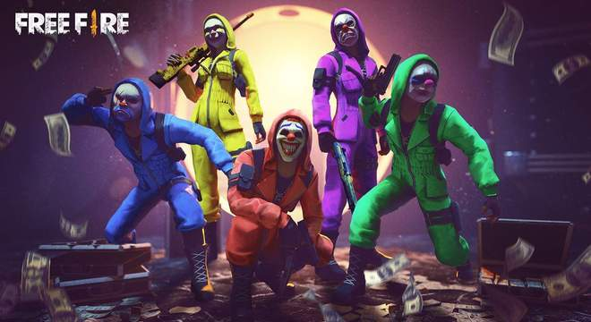

FREE FIRE
A HISTORIA DO FREE FIRE

O FREE FIRE é um dos games mobile mais jogados no mundo todo. Cerca de 50 milhões de usuários de Android e iOS jogam por dia, fazendo-o um dos Battle Royale mais jogados pelo celular, junto com PlayerUnknown's Battlegrounds (PUBG) e Fortnite. Sucesso no Brasil, o jogo tem como origem o Vietnã. Na realidade, ele não foi criado pela Garena, gigante empresa de Singapura, mas sim por uma desenvolvedora tímida e pouco conhecida chamada 111dots Studio. E não é mera coincidência suas primeiras grandes comunidades de gamers terem surgido no sul da Ásia e também no Brasil.
Atualmente o país conta competitivo movimentado. A Liga Brasileira de Free Fire é a competição oficial do mobile, e conta com três divisões: a principal, a liga de acesso à elite (Série B) e a terceira divisão (Série C).
A 111dots Studio lançou a versão beta de Free Fire Battlegrounds em 28 de setembro de 2017 apenas para os servidores vietnamitas. A intenção do jogo era competir com outra desenvolvedora local, a Horus Entertainment, que havia lançado a versão beta de Bullet Strike: Battlegrounds poucos dias antes. Ambas as desenvolvedoras buscavam replicar o sucesso de PUBG no país, lançando game mobiles de Battle Royale.
O FREE FIRE ultrapassou os outros jogos concorrentes no Vietnã por conta de sua mecânica leve, que focou na jogabilidade e na facilidade dos comandos para atirar, dando menos atenção aos gráficos. Essas configurações tornaram o jogo acessível para milhares de usuários de celulares mais baratos, ao contrário do PUBG, que demandava dispositivos mais avançados, num país subdesenvolvido e com uma larga população de baixa renda. A 111dots, então, tornou seu jogo a opção "popular" para os fãs de Battle Royale. Sua primeira versão do jogo ocupava apenas 25 MBs na memória dos celulares. Desde o início ele recebe atualizações mensais, visando sempre a melhoria da experiência Free Fire.
Forrest Li, o CEO da Garena e um dos homens mais ricos do mundo (fortuna estimada em U$ 545 milhões, cerca de R$ 3,8 bilhões) estava atento ao mercado sul-asiático e rapidamente adquiriu os direitos de publicação do Free Fire Battlegrounds. Pela primeira vez sua empresa foi parte do desenvolvimento de um jogo: o Garena Free Fire, lançado em 4 de dezembro de 20177. Forrest Li, que homenageou o filme “Forrest Gump” ao escolher este nome durante sua graduação em Stanford, na California, se mostra um homem de visão. Não é por acaso que se tornou o segundo no mundo a ficar bilionário com a indústria dos videogames, depois de Tim Sweeney, da Epic Games (Fortnite). A 111dots, que até hoje não lançou outro título além de Free Fire, continua participando do desenvolvimento do jogo, e ainda é sede do servidor vietnamita.